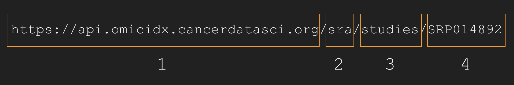

Background
RESTful Concepts
Before focusing on any jargon or getting hung up on semantics, in the case of the OmicIDX REST API, three components to the system are important.
The first is that REST systems are typically composed of resources. Any information that can be named can be a resource: a document or image, a temporal service, a collection of other resources, a non-virtual object (e.g. a person), and so on. In the OmicIDX case, typical resources are things like:
- SRA Runs
- SRA Studies
- Biosample Sample records
- SRA Experiments
- SRA Samples
- GEO Platforms
- GEO Samples
- GEO Series (studies)
REST uses a resource identifier to “name” the particular resource involved in an interaction. In OmicIDX, these resource identifiers are typically accessions, like SRR000273, SRX000273, or SAMND00000001.
A REST API accesses resources via http calls. For example, to access a specific SRA study record, one can use a URL like:
https://api.omicidx.cancerdatasci.org/sra/studies/SRP014892
Accessing the URL from the linux command-line program using a program
like curl leads to facile programmatic access. More on programmatic
access follows.
REST is acronym for REpresentational State Transfer. It is architectural style for distributed systems and was first presented by Roy Fielding in 2000 in his famous dissertation.
Retrieving records by accession
All of the common public omics data repositories include accessions for their records. These accessions serve as keys in OmicIDX, so they can be reused easily for quick lookup of records. When the accession is known (such as when you find the accession in a pubmed abstract), retrieving the metadata for that accession is a common task. OmicIDX uses accessions from the original database, so eee table @ref(tab:tab1) for examples of what to look for.
| Database | Example accession | Type of record |
|---|---|---|
| SRA | SRP012682 |
Study |
| SRA | SRS357840 |
Sample |
| SRA | SRX178456 |
Experiment |
| SRA | SRR543404 |
Run |
| Biosample | SAMD00000001 |
Sample |
| GEO | GSM10 |
Sample |
| GEO | GSE2553 |
Study (or Series) |
| GEO | GPL96 |
Platform |
Get an individual record by accession
URLs for accessing individual records in OmicIDX follow a standard form and are easy to construct. See Figure @ref(fig:urldiagram) for details.
(ref:urldiagram) OmicIDX URLs to access omics metadata resources by
accession follow a pattern. In the diagramatic representation of an
OmicIDX URL, box 1 is the server name. Box 2 is the originating database
which is, in this case, the [SRA] database. Box 3 is the name of the
resource within the originating database, here the studies collection.
Finally, box 4 is the accession. Note that no / follows the accession.
knitr::include_graphics('url_diagram.png')

(ref:urldiagram)
For example, the SRA accession for the GTeX study is SRP012682. This
accession comes from the sra database and is a study, so we query
the following URL:
Clicking on the link will return JSON results for the study record for
the GTeX study. Alternatively, one can use curl on the command line to
access the same URL.
curl -s 'https://api.omicidx.cancerdatasci.org/sra/studies/SRP012682'
While curl will work fine to get results, the httpie
tool is a friendlier tool for querying web APIs.
Installation is straightforward.
http 'https://api.omicidx.cancerdatasci.org/sra/studies/SRP012682' \
--pretty format
## {
## "detail": "Method Not Allowed"
## }
The [httr] package is useful in R for accessing web resources. The following is a simple code example.
# Requires the httr package
# install.packages('httr')
response = httr::GET("https://api.omicidx.cancerdatasci.org/sra/studies/SRP012682")
content = httr::content(response)
content
## $pubmed_ids
## list()
##
## $total_spots
## [1] "1698588305124"
##
## $identifiers
## $identifiers[[1]]
## $identifiers[[1]]$id
## [1] "PRJNA75899"
##
## $identifiers[[1]]$namespace
## [1] "BioProject"
##
##
## $identifiers[[2]]
## $identifiers[[2]]$id
## [1] "phs000424"
##
## $identifiers[[2]]$namespace
## [1] "dbGaP"
##
##
## $identifiers[[3]]
## $identifiers[[3]]$id
## [1] "phs000424"
##
## $identifiers[[3]]$namespace
## [1] "dbGaP"
##
##
##
## $taxon_ids
## $taxon_ids[[1]]
## [1] "9606"
##
##
## $experiment_count
## [1] "24588"
##
## $received
## [1] "2012-05-04T15:43:05"
##
## $abstract
## [1] "Lay Description. The aim of the Genotype-Tissue Expression (GTEx) Project is to increase our understanding of how changes in our genes affect human health and disease with the ultimate goal of improving health care for future generations. GTEx will create a database that researchers can use to study how inherited changes in genes lead to common diseases. GTEx researchers are studying genes in different tissues obtained from many different people. The GTEx project also includes a study of the GTEx donor consent process - this study will help ensure that the consent process and other aspects of the project effectively address the concerns and expectations of participants in the study. GTEx is a pioneering project that uses state-of-the-art protocols for obtaining and storing a large range of organs and tissues, and for testing them in the lab. Until now, no project has analyzed genetic variation and expression in as many tissues from the same person in... (for more see dbGaP study page.)"
##
## $accession
## [1] "SRP012682"
##
## $published
## [1] "2014-02-14T22:56:17"
##
## $title
## [1] "Genotype-Tissue Expression (GTEx) Common Fund Project"
##
## $mean_bases_per_run
## [1] 14030484634
##
## $run_count
## [1] "24588"
##
## $center_name
## [1] "dbGaP"
##
## $study_type
## [1] "Other"
##
## $insdc
## [1] TRUE
##
## $sample_count
## [1] "14249"
##
## $alias
## [1] "phs000424"
##
## $attributes
## $attributes[[1]]
## $attributes[[1]]$value
## [1] "PRJNA75897"
##
## $attributes[[1]]$tag
## [1] "parent_bioproject"
##
##
##
## $total_bases
## [1] "343115501734811"
##
## $lastupdate
## [1] "2017-09-17T10:26:44"
##
## $BioProject
## [1] "PRJNA75899"
##
## $status
## [1] "live"
In python, one might use the [requests] library to access the URL and retrieve the data into a python object.
# requires the requests package be available
# pip install requests
import requests, pprint
response = requests.get(
"https://api.omicidx.cancerdatasci.org/sra/studies/SRP012682"
)
pprint.pprint(response.json())
## {'BioProject': 'PRJNA75899',
## 'abstract': 'Lay Description. The aim of the Genotype-Tissue Expression '
## '(GTEx) Project is to increase our understanding of how changes '
## 'in our genes affect human health and disease with the ultimate '
## 'goal of improving health care for future generations. GTEx will '
## 'create a database that researchers can use to study how '
## 'inherited changes in genes lead to common diseases. GTEx '
## 'researchers are studying genes in different tissues obtained '
## 'from many different people. The GTEx project also includes a '
## 'study of the GTEx donor consent process - this study will help '
## 'ensure that the consent process and other aspects of the project '
## 'effectively address the concerns and expectations of '
## 'participants in the study. GTEx is a pioneering project that '
## 'uses state-of-the-art protocols for obtaining and storing a '
## 'large range of organs and tissues, and for testing them in the '
## 'lab. Until now, no project has analyzed genetic variation and '
## 'expression in as many tissues from the same person in... (for '
## 'more see dbGaP study page.)',
## 'accession': 'SRP012682',
## 'alias': 'phs000424',
## 'attributes': [{'tag': 'parent_bioproject', 'value': 'PRJNA75897'}],
## 'center_name': 'dbGaP',
## 'experiment_count': '24588',
## 'identifiers': [{'id': 'PRJNA75899', 'namespace': 'BioProject'},
## {'id': 'phs000424', 'namespace': 'dbGaP'},
## {'id': 'phs000424', 'namespace': 'dbGaP'}],
## 'insdc': True,
## 'lastupdate': '2017-09-17T10:26:44',
## 'mean_bases_per_run': 14030484634.422861,
## 'published': '2014-02-14T22:56:17',
## 'pubmed_ids': [],
## 'received': '2012-05-04T15:43:05',
## 'run_count': '24588',
## 'sample_count': '14249',
## 'status': 'live',
## 'study_type': 'Other',
## 'taxon_ids': ['9606'],
## 'title': 'Genotype-Tissue Expression (GTEx) Common Fund Project',
## 'total_bases': '343115501734811',
## 'total_spots': '1698588305124'}
Each resource (SRA Sample, for example) has a particular data model that is shared across all members of that resource. However, different resources (SRA Sample vs SRA Study) will have different data models (though some fields are common) from one another. To get a sense of what other resources look like, try clicking through these links. For more details, see the data models for [SRA], [GEO], and [Biosample].
Additional examples include:
- https://api.omicidx.cancerdatasci.org/sra/samples/SRS357840
- https://api.omicidx.cancerdatasci.org/sra/experiments/SRX178456
- https://api.omicidx.cancerdatasci.org/sra/runs/SRR543404
- https://api.omicidx.cancerdatasci.org/biosample/samples/SAMD00000001
Get records related to an accession
Another common task is to find all the records of one type for a record of another type, e.g., all samples for a given study. For this section, we will make the workflow a bit more realistic. Mike Love routinely teaches about gene-level differential RNA-seq expression using the rnaseqGene Bioconductor workflow. After accessing the Bioconductor vignette, we note that the data used are from [@Himes2014-zj].
To find SRA links from a PubMed record, look at the Related
Information section that will look like Figure @ref(fig:pubmedlinks).
Clicking on the SRA link will reveal that thethe related SRA study
is SRP033351. Reviewing the single-record access approach from the
last section, this URL returns the details of the study.

When viewing a PubMed abstract, the Related Information section may have link(s) out to omics databases. Clicking through on one of these links will reveal an accession that can be used for accessing OmicIDX
Fetching all related samples given this study (see the [SRA data model section][SRA] for how samples relate to a study) is straightforward and the URL again follows a pattern.
The URLs for all related experiment and run records are, respectively:
- https://api.omicidx.cancerdatasci.org/sra/studies/SRP033351/experiments
- https://api.omicidx.cancerdatasci.org/sra/studies/SRP033351/runs
Here are additional examples of accessing related records:
- https://api.omicidx.cancerdatasci.org/sra/samples/SRS357840/experiments
- https://api.omicidx.cancerdatasci.org/sra/samples/SRS357840/runs
- https://api.omicidx.cancerdatasci.org/sra/studies/SRP012682/samples
- https://api.omicidx.cancerdatasci.org/sra/studies/SRP012682/experiments
- https://api.omicidx.cancerdatasci.org/sra/studies/SRP012682/runs
- https://api.omicidx.cancerdatasci.org/sra/samples/SRS357840/experiments
- https://api.omicidx.cancerdatasci.org/sra/samples/SRS357840/runs
Counting and paging through results
API accesses and queries may include many millions of records, but the OmicIDX REST API limits resultsets to batches of size <1000 records in a single call to the API. This section addresses:
- Choosing the number of results, or
size, that are returned by each API call. - Paging through very large resultsets in chunks using the cursor.
Adjusting the page size
Adding a size parameter to the URL above modifies the default
resultset size of 10 to be either smaller (down to zero) or larger (up
to 999). An example URL including the size parameter looks like:
# curl -s 'https://api.omicidx.cancerdatasci.org/sra/studies/SRP033351/samples?size=2'
http 'https://api.omicidx.cancerdatasci.org/sra/studies/SRP033351/samples' \
size==2 \
--pretty format
## {
## "detail": "Method Not Allowed"
## }
Using a size of zero (0) is useful to capture just the count of the
number of records.
# curl -s 'https://api.omicidx.cancerdatasci.org/sra/studies/SRP033351/samples?size=0'
http 'https://api.omicidx.cancerdatasci.org/sra/studies/SRP033351/samples' \
size==0 \
--pretty format
## {
## "detail": "Method Not Allowed"
## }
Note that the stats.total part of the output gives the number 16.
All data resultsets from the OmicIDX API will include this annotation,
giving the total number of results available given the query or URL.
Another, larger study, such at GTeX (SRP015892) offers many more samples. But how many?
# curl -s 'https://api.omicidx.cancerdatasci.org/sra/studies/SRP012682/samples?size=0'
http 'https://api.omicidx.cancerdatasci.org/sra/studies/SRP012682/samples' \
size==0 \
--pretty format
## {
## "detail": "Method Not Allowed"
## }
Therefore, the size parameter varies the number of results returned by
an API call. Using a size of zero (0) is a quick-and-dirty approach to
get a count of the number of records that would be returned by an API
call. This same trick can be used when counting search results below.
Using the cursor to page through large result sets.
The limitation on result set size is to mitigate problems with network connectivity and to simplify somewhat the database backend infrastructure. However, there are definitely result sets that are larger than 999 records. How do we deal with that situation?
The OmicIDX API uses paging. In particular, the API uses cursor-based
paging. For each result
set that the API returns, if more results are available, there will be a
cursor field available that can be used as a parameter to the next
API call to start with results after the cursor. Perhaps it is easier
to explain with an example:
# curl -s 'https://api.omicidx.cancerdatasci.org/sra/studies/SRP012682/samples?size=5'
http 'https://api.omicidx.cancerdatasci.org/sra/studies/SRP012682/samples' \
size==5 \
--pretty format
If you run the line above, the result will include a
"cursor": "LONG....STRING" that might look like the following (your
cursor may be different).
...
],
"cursor": "X2lkfHxhc2N8fHx8U1JTMTAxNzEzNw==",
"stats": {
"total": 14249,
"took": 10
},
"success": true
}
...
Adding the cursor as a parameter to the same URL retrieves the next 5 results like so:
# curl -s 'https://api.omicidx.cancerdatasci.org/sra/studies/SRP012682/samples?size=5&cursor=X2lkfHxhc2N8fHx8U1JTMTAxNzEzNw=='
http 'https://api.omicidx.cancerdatasci.org/sra/studies/SRP012682/samples' \
size==5 \
'cursor==X2lkfHxhc2N8fHx8U1JTMTAxNzEzNw==' \
--pretty format
The next cursor value will look similar (for example,
“X2lkfHxhc2N8fHx8U1JTMTAxNzE0Mg==”). Continuing to play this game of
specifying the cursor when it is available allows paging through the
result set. When fetching results, the cursor will be available until
there are no more results to be fetched. Thus, when there is not a
cursor entry in the results, all results have been retrieved and any
looping code can stop.
Note a few assumptions/caveats here.
- The
sizeparameter dictates the number of results in one “page”. - The
cursorparameter is specific to the search or API query. Cursors cannot be reused across different queries. - When calling the API, the query should remain fixed when paging with a cursor (ie., use the same URL over again, changing only the cursor value).
- Underlying the cursor functionality is a fixed sorting order (that is not currently a parameter that can be tweeked).
Customizing returned fields
Listing available fields
# curl -s 'https://api.omicidx.cancerdatasci.org/_mapping/study'
http 'https://api.omicidx.cancerdatasci.org/_mapping/study' \
--pretty format
## {
## "detail": "Method Not Allowed"
## }
Including or excluding specific fields from results
# curl -s 'https://api.omicidx.cancerdatasci.org/sra/studies/SRP012682/samples?size=5&include_fields=accession&include_fields=title'
http 'https://api.omicidx.cancerdatasci.org/sra/studies/SRP012682/samples' \
'size==5' 'include_fields==accession' \
'include_fields==title' \
--pretty format
## {
## "detail": "Method Not Allowed"
## }
Search
- Decide what you want to search for: studies, samples, experiments, or runs.
- Take a look at the output of one of the API calls on the previous slide for the entity type you want to search for.
- Look closely at the field names and what is in them.
- Form the query using lucene query syntax.
- Form the URL based like so, using
q=to specify the query string. For example, to find all human RNA-seq experiments:
The number of records can be tuned using size=.... (up to 999
records).
Aggregation and basic analytics
Feedback
Was this page helpful?
Glad to hear it! Please tell us how we can improve.
Sorry to hear that. Please tell us how we can improve.